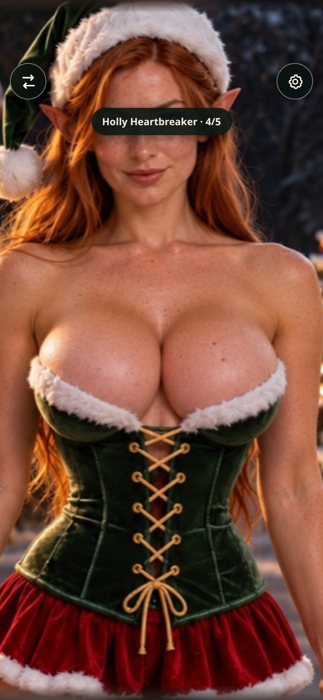
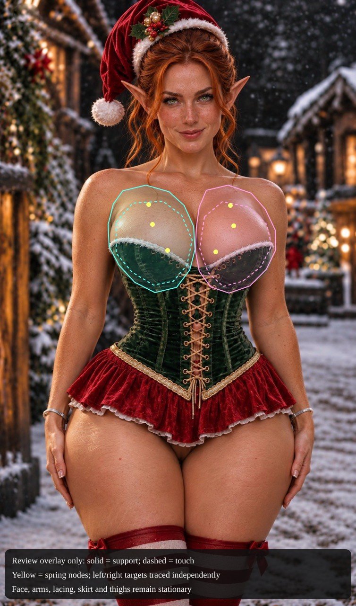
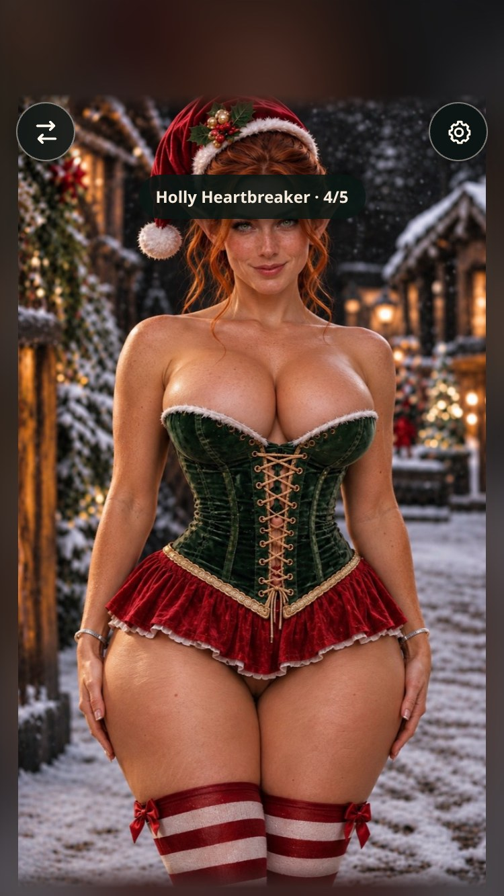

Holly Heartbreaker · replacement review
Isolated experiment from production R13 with the current audio and Santa fixes. Production is unchanged.
Open interactive Holly preview → · Calibration and validation details
Before / after · iPhone-sized 390×844

Current production: old portrait and close framing Replacement: face, corset, skirt and upper thighs visible
Replacement: face, corset, skirt and upper thighs visibleMotion · natural tap
Actual renderer captures at 30 fps. These loops repeat for review; the app's tap settles.
WebGLCanvas fallback
Rebuilt motion regions
Review-only overlay. The integrated portrait has no markings.

Portrait framing

375×667390×844430×932440×956Validation
180 Holly cases, 48 exact non-Holly comparisons, ten framing checks, real HTTPS offline loading in both renderers, isolated saved settings, and protected-pixel/reset checks passed. No browser errors.
Ready for iPhone review. Physical shake, Safari audio routing, PWA installation and sustained device performance still need hands-on review. No production promotion or Holly voice work.